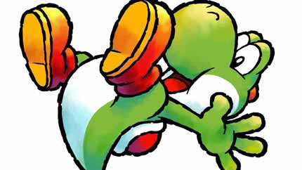
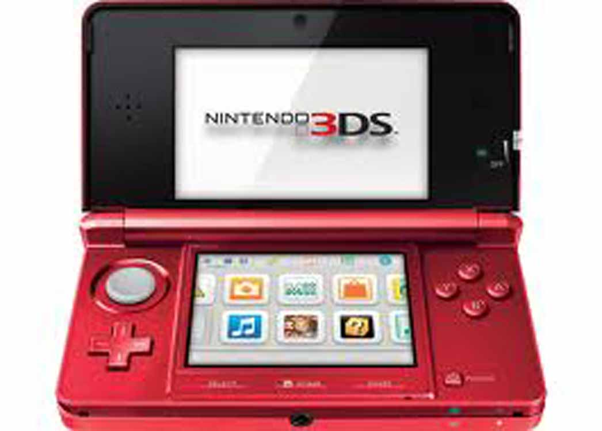

Launch of Yoshi's New Island
Explore a Fun-Filled World as the Green Dino himself

The gameplay focuses on controlling Yoshi characters who must escort Baby Mario through a series of levels. Like similar Yoshi games, the game features a hand-drawn art style, with level designs and backgrounds stylized as oil paintings, watercolors, and crayon drawings.
Only availible on
